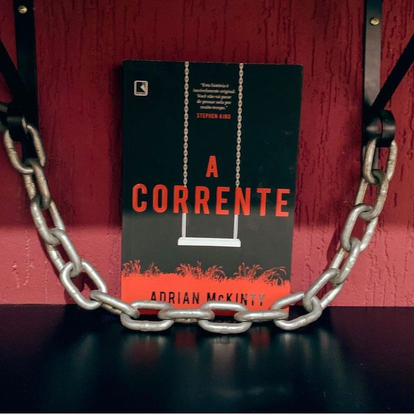

A Corrente
(Adrian McKinty - Record)
⭐⭐⭐⭐⭐
Neste Thriller maravilhoso você vai se tornar tudo: vítima, sequestrador e sobrevivente. Sempre alimentando a corrente, afinal de contas, o elo não pode se quebrar
Tudo parecia um dia normal, Rachel Klein deixa sua filha Kylie de 13 anos no ponto de ônibus para ir à escola, afinal é seguro e ele está acostumada a ir sozinha todos os dias. Rachel segue sua rotina mas, um telefonema de um número desconhecido MUDA TUDO. Do outro lado, uma voz de mulher avisa que Kylie está no banco de trás de seu carro, e que Rachel só verá a filha de novo se pagar um resgate - e sequestrar outra criança.Assim como Rachel, a mulher no telefone é mãe, também teve o filho sequestrado e, se Rachel não fizer exatamente o que ela manda, o menino morre, e Kylie também. AGORA RACHEL FAZ PARTE DA CORRENTE. Esse esquema totalmente desumano transforma os pais da vítimas em criminoso e ao mesmo tempo usando o amor dos pais pelos filhos deixa alguém muito rico. Chamar a polícia não é uma opção, a corrente sabe TUDO que você faz e usa da violência e do medo para controlar sua vítimas. Todos que tentaram… acabaram mortos.
Este livro vai fazer você questionar até onde sua moral, valores e princípios vai para salvar a pessoa que você mais no mundo. Você passaria de vítima a algoz?
A narrativa é fluida e o suspense é presente em vários pontos te deixando no ritmo de tudo que está acontecendo, alerta, aflito.
Tudo é contado em terceira pessoa e o narrador vai nos dando migalhas para desvendar o grande mistério. O livro é dividido em duas partes, o que achei bem interessante pois, quando achei que não teria como ele entregar mais nada e o enredo e nativa perderiam o fôlego ele vem com um novo conflito. Tudo é bem amarrado e sem pontas soltas.